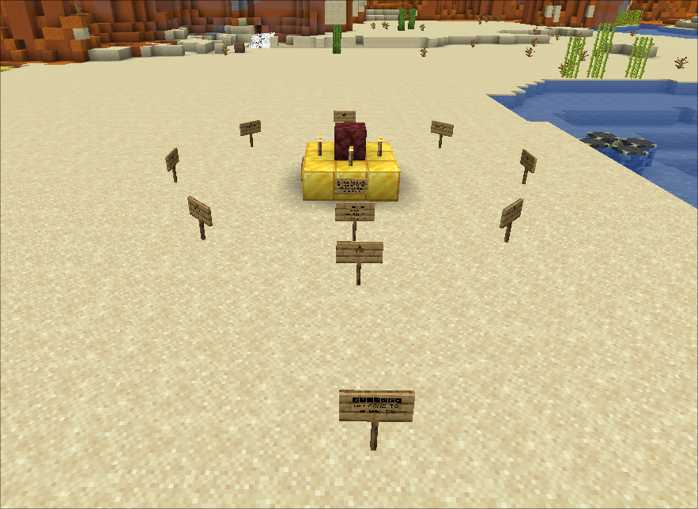
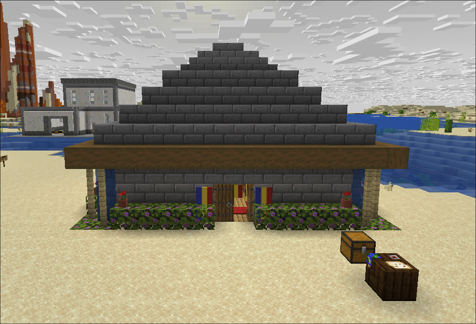
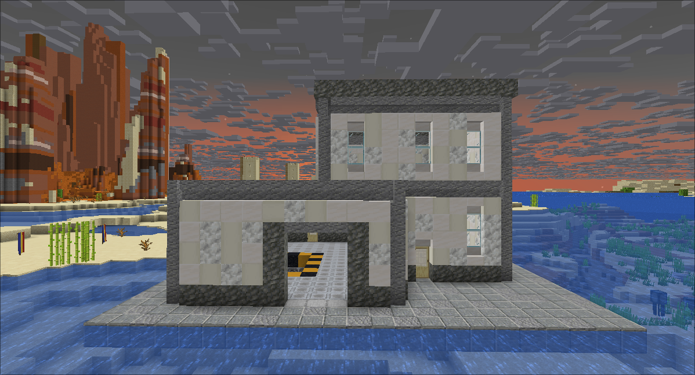

Join the server
Connect to creativeanarchy.net in Minecraft
(Java Edition, version 1.21.x). This is the 2b2d Creative Anarchy
server.
A curated creative town on the anarchy server 2b2d. Build together. Share your work. Trust makes it possible.
Downtown is a small, curated town on 2b2d — a Creative Anarchy server where anything is possible. Unlike the chaos of the wider world, Downtown is a sanctuary: a handful of random, creative builds from people who just want to make something cool together.
Entry is by trust only. You share your creations, you respect everyone else’s, and the town grows richer for it. No griefing. No drama. Just builds.
creativeanarchy.net
invite-only access
anything goes
Downtown works because everyone follows these. They’re not hard.
Don’t break, steal, or modify someone else’s build. Not even a little. Not even “as a joke.”
Be chill. Be helpful. If someone asks you to stop something, stop. It’s that easy.
Use what you have installed as an advantage for building, not for ruining other people’s days. Fly, schematic, clone — just don’t weaponise it.
A growing collection of works from Downtown’s members.

The first thing you see — a cluttered, lived-in spawn designed to catch the eye of anyone flying by.

A warm, crafted home from one of Downtown’s earliest members. Every block placed with care.

A surreal entrance to something deeper. Step inside — if you dare.
More builds appear as the town grows. Want yours here? Apply →
These players are not welcome in Downtown. If you see them, steer clear and let a member know.
This list is maintained by the community. New entries are added when verified by a Downtown member.
Getting in is simple. No forms, no applications — just show up and ask.
Connect to creativeanarchy.net in Minecraft
(Java Edition, version 1.21.x). This is the 2b2d Creative Anarchy
server.
There is almost always a Downtown member online. Ask in chat: “Who is a member of Downtown?” — someone will vouch for you if you’re genuine.
Run /discord in-game to get the Discord invite.
Join the server and ask in the general channel — someone
will help you out.
Once you’re in, pick a spot and build. Share your work with everyone. That’s what Downtown is for.
Stuff that comes up in chat every other day.
If they grow legs, yes. We don’t mind — everyone here uses Meteor Client and other cheats to build stuff for fun anyway. As long as it’s yours, bring it.
The Badlands hills are the natural border. If you remove them, the border expands. In other words: no, there’s no size limit. Just expand your platform however much you need to.
There are moderators in Downtown. You’ll be banned from the town and added to the griefers list — permanently.